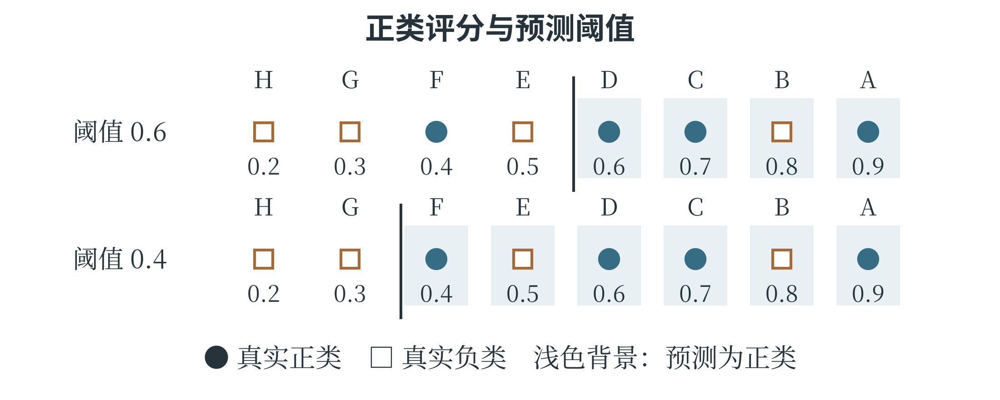

5.4 模型评估与结果解释
读懂混淆矩阵
分类评价先要数清哪些判断正确、哪些判断错误。混淆矩阵将真实类别与预测类别交叉排列，记录各类组合的数量。表 5-4 以“需要检查”为正类，“正常”为负类；正类只是当前重点关注的类别，并不表示道德上的好坏。本表规定行是真实类别、列是预测类别，阅读其他矩阵时也应先看清行列说明。
表 5-4 一组检查模型的混淆矩阵
| 真实类别 | 预测需要检查 | 预测正常 |
|---|---|---|
| 需要检查 | 18 | 2 |
| 正常 | 8 | 72 |
18 个需要检查的样本被正确找出，称为真正例，记为 TP；2 个被漏掉，称为假负例，记为 FN。8 个正常样本被误报，称为假正例，记为 FP；72 个正常样本被正确排除，称为真负例，记为 TN。四格相加为 100，覆盖全部样本。“真、假”看预测是否正确，“正、负”看预测给出的类别，明确这两个角度就不容易把格子记反。
准确率表示全部样本中判断正确的比例。表中为 \((18+72)/100=90\%\)。精确率又称查准率，关注被判为正类的样本里有多少是真的正类；本例为 \(18/(18+8)\approx69.2\%\)。召回率又称查全率，关注实际正类中有多少被找出来；本例为 \(18/(18+2)=90\%\)。
精确率与召回率都用了 18，分母却不同：一个数预测正类，一个数实际正类。
当分母为零时，不能直接按分数计算，应说明这种情况，并查看所用工具如何处理。多分类任务中，混淆矩阵会有更多行列，对角线上仍是判断正确的数量；其他位置则说明某一类被误认成了哪一类。模型总分相同，错误可能分布在完全不同的位置。
指标与使用目的要对应
准确率很高，可能只是因为多数样本属于同一类。1000 个样本中若有 990 个正常，一个永远预测正常的模型准确率就是 99%，却找不出任何一个需要检查的样本。因此，类别不均衡时，不能只看总体准确率。精确率回答“报出来的有多可信”，召回率回答“该找的找到了多少”，可以帮助揭示这种差异。
一些模型先输出分数，再按阈值决定类别，例如分数不小于 0.6 就预测需要检查。阈值降低，通常会使更多样本被列为正类，漏报可能减少，误报也可能增加；阈值升高则通常相反。这是改变作出决定的规则，不一定改变模型内部参数。
分数即使位于 0 与 1 之间，也不必然是准确校准的概率。只有经过相应评价，才能把“0.8”解释成与实际发生频率相符的可能性估计。
F1 分数是精确率与召回率的一种综合指标。设两者分别为 \(P\) 和 \(R\)，在分母非零时，\(F1=2PR/(P+R)\)。它不是简单的算术平均，会受到较低一项的明显影响。例如，精确率为 1、召回率为 0.5 时，F1 约为 0.667，低于算术平均数 0.75。指标选择要服从任务：某些场景规定漏报最多几次，就应直接检查漏报数，而不能用很高的 F1 抵消超过限制的事实。
回归评价则关注数值误差。第三章介绍的 MAE 表示绝对误差的平均大小，MSE 对较大误差的影响更敏感。还可以对 MSE 取平方根，得到均方根误差，简称 RMSE，它与目标值具有相同单位。比较不同模型时，应使用相同的评价样本、目标定义和计量单位；预测温度的误差与预测人数的误差，不能仅凭数字大小判断哪个模型“更优秀”。
同样的准确率可能对应不同错误
表 5-5 给出八个样本的评分。正类仍表示需要检查，评分越高，模型越倾向于报告为正类。先把“不小于 0.6”作为判断条件，A、B、C、D 被报告；将阈值降到 0.4，E、F 也会被报告。
表 5-5 同一批评分在不同阈值下作决定
| 样本 | 真实类别 | 评分 | 评分不小于 0.6 |
|---|---|---|---|
| A | 正类 | 0.9 | 是 |
| B | 负类 | 0.8 | 是 |
| C | 正类 | 0.7 | 是 |
| D | 正类 | 0.6 | 是 |
| E | 负类 | 0.5 | 否 |
| F | 正类 | 0.4 | 否 |
| G | 负类 | 0.3 | 否 |
| H | 负类 | 0.2 | 否 |
阈值为 0.6 时，正确找出 A、C、D，误报 B，漏报 F，正确排除 E、G、H。因此 TP 为 3、FP 为 1、FN 为 1、TN 为 3，准确率、精确率和召回率都是 75%。阈值为 0.4 时，四个真实正类全部找到，但增加了对 E 的误报；TP 为 4、FP 为 2、FN 为 0、TN 为 2，准确率仍是 75%，精确率变为 \(4/6\)，召回率升为 100%。

两种方案的准确率相同，适用情况却可能不同。如果遗漏一条重要记录的代价很高，而且人工可以再检查报告，较低阈值可能更符合任务；如果人工检查资源很有限，误报过多也会挤占处理能力。选择时需要明确这些实际条件，再在验证数据上确定规则。不能先看测试标签，再逐个挑选刚好能得到好成绩的阈值。
从多分类矩阵找出主要混淆
多分类任务可以沿用相同的交叉计数。假设三类植物各有 10 个测试样本，矩阵规定行是真实类别、列是预测类别：
表 5-6 三类植物的预测结果
| 真实类别 | 预测甲 | 预测乙 | 预测丙 |
|---|---|---|---|
| 甲 | 8 | 2 | 0 |
| 乙 | 1 | 7 | 2 |
| 丙 | 0 | 3 | 7 |
对角线上的 8、7、7 都是正确判断，总准确率为 \(22/30\)，约 73.3%。真实丙类有 3 个被判为乙类，而真实甲类没有被判为丙类。改进时，可以先检查乙、丙两类的混淆：是否形态接近、是否缺少能够区分的特征、是否有标注分歧。一个总准确率只能显示整体结果，矩阵则指出错误主要发生在哪些类别之间。若把乙类单独当作正类，其余两类合成负类，那么 TP 为 7，FN 为 \(1+2=3\)，FP 为 \(2+3=5\)，TN 为其余四个格子的总和 \(8+0+0+7=15\)。于是乙类召回率为 \(7/10=70\%\)，精确率为 \(7/12\approx58.3\%\)。二分类指标由此可以扩展到“逐类观察”，但每次都要先说清哪个类别被视为正类。
总体结果之外还要看什么
总体指标是对所有样本的汇总，可能掩盖少数场景的困难。假设一个识别模型在白天的 900 张图片上判断正确 882 张，在夜间的 100 张图片上正确 60 张，总体准确率为 94.2%，但夜间准确率只有 60%。如果模型要在夜间工作，这项不足就不能由白天表现补偿。按光照、设备、类别等有实际意义的条件分别报告结果，称为分组评价。
分组以后，还要看每组有多少样本。某组只有 5 张图片，错一张就会使准确率下降 20 个百分点；另一组有 500 张，错一张只改变 0.2 个百分点。少量样本上的高低差异可能不稳定，需要更多有代表性的记录支持判断。
错误分析可以从具体样本开始：是否模糊、标签有误、与训练材料差别很大，或者不同类别原本就难以区分。找到原因，才便于决定补数据还是换方法。
模型是否可用，有时还要同时满足多项要求。假设规定漏报不超过 3 次，而且夜间准确率至少 85%。模型甲漏报 2 次、夜间准确率 80%，模型乙漏报 4 次、夜间准确率 90%，两者都没有同时达标。不能选择一项较好的数字去抵消另一项不达标，也不能把两个模型简单组合后，直接沿用单个模型的指标；组合后的输出需要重新评价。
结果解释是说明模型为什么给出某个结果、它依赖哪些信息，以及结果能支持什么结论。小型决策树可以沿判断路径解释，线性模型可以检查特征变化怎样影响输出；复杂模型的解释方法则可能只是近似分析。即使发现某个特征对预测影响较大，也不能仅凭模型就认定它在现实中造成了结果。第三章中相关与因果的区别，在这里仍然成立。